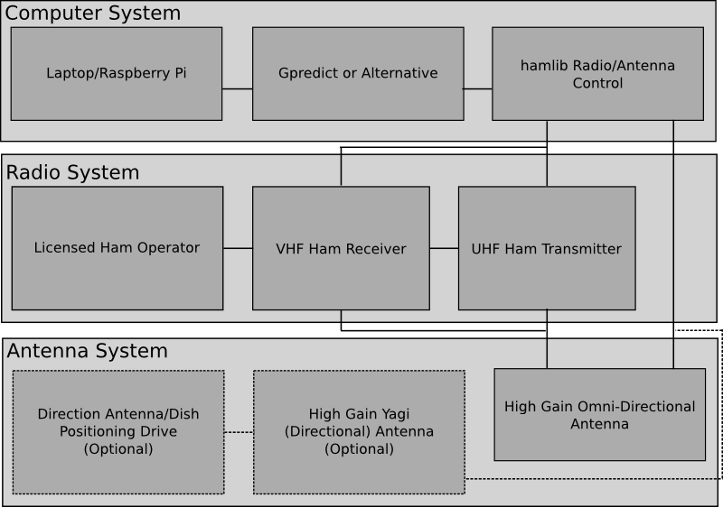

Project scope
Added by Aaron Harper almost 10 years ago
- Contact a satellite for confirmation. A pingback where we confirm the contact.
- Contact another ham radio operator through the satellite, using it as a repeater.
- Contact ISS through the station's ham radio receiver.
Replies (34)
RE: Project scope - Added by Jeremy Wright almost 10 years ago
Also, to capture a high level of what we talked about architecture-wise via email I'm adding the following.
We've talked about the things that we'd like to see in an architecture study on this topic:- Identify the major elements of a ground station
- Break those elements down into kite-level phases
- Identify existing implementations of the major elements and score them (open source has some preference over closed options, but closed options are fine if there are many suitable and easily substituted ones)
RE: Project scope - Added by Aaron Harper almost 10 years ago
Ground Station Components¶
1. Computer System
- Hardware, may be a PC, Laptop, or embedded PC like a Raspberry Pi.
- Prediction and plotting software, I like gpredict, but there are plenty of others.
- Optionally the ability to automatically operate the other two systems. This can be accomplished with hamlib which interfaces with gpredict.
2. Radio System (the receiver and transmitter are usually part of the same radio equipment. This is a "Dual band" transceiver).
- Receiver in the VHF ham range (example OSCAR-52 can be monitored at 145.9250-145.8750 MHz). Reception of signals may be done without a license.
- Transmitter in the UHF ham range (example OSCAR-52 can be contacted at 435.2250-435.2750 MHz). This requires a radio operator's license.
- A licensed radio operator. I include this in the radio system because without them, the set may legally only be used to receive.
3. Antenna system
- A high gain omnidirectional antenna set up for the expected frequency and polarization such as the "eggbeater" and "turnstile" designs.
- Optionally a high gain Yagi array or dish which are directional and must be pointed.
- Optionally a way to point the directional antenna at the satellite using azimuth and elevation data.
This should be a good start and may be expanded.
RE: Project scope - Added by Aaron Harper almost 10 years ago
Level One Kites¶
Computer System:¶
For the computer system, a level one kite has little cost unless we want to run gpredict on a raspberry pi (which is both cool and possible). The trouble is that is is not really all that practical, with the CPU nailing 100% utilization when running with hamlib and serial port emulation to tie it into a radio and azimuth-elevation mount. It would be better to run the system on an existing laptop or PC. A possible level one kite could be predicting an ISS pass and watching for the reflection from the solar panels.
Radio System¶
A level one kite for the radio system of this project may be a challenge. Radios which are capable of doing the job and are able to be controlled by the computer system to automatically compensate for doppler shift cost about $200-300 to start and go WAY up from there. The way I'm going to recommend getting around the problem with the cost of the radio is this: Just as we assume a person has a computer to talk to Arduino for Shepherd, it should be a safe bet that anyone who attempts this project has both a computer, is a licensed amateur radio operator, and owns a dual band (VHF/UHF) radio. I recommend therefore that a level one kite for the radio system should be the receipt of a technician class ham radio license.
Antenna System¶
The antenna design for a level one kite has already been done for us, and the designs for the antenna are free to use, available at http://on6wg.pagesperso-orange.fr/Page%201.html. I think we can do a better job on the instructions though, an perhaps our focus for the level one kite should be refining the design, a construction guide, and usage instructions. This is another thing we can "kitify".While omnidirectional antennas like these lack a certain level of appeal the movement of a tracking high gain rig has, as well as some of the gain, we can save that for another kite.
With the computer running gpredict, connected to the radio and the completed antenna, the licensed user can accomplish the actions outlined in the project scope.
RE: Project scope - Added by Aaron Harper almost 10 years ago
Satellite Tracking Software¶
Here is a spreadsheet comparing several software titles. The limits to this list is that the software must run on Windows, Mac, or Linux (no WinCE or Palm), and must be available to the general public for less than the $200.00 level one kite. Scoring is fairly straightforward, with points assigned for each capability and platform supported. Additional points are awarded for zero cost and open source.
Headings¶
Headings in the spreadsheet and their definitions include:
- Map proj -Map projection for geographic visualization. These come in various states of usability, Refer to the software's respective web page.
- Az-El track -Data to show Azimuth and elevation data during the satellite encounter
- Az-El ctrl -The ability to control an antenna rotator and point a dish or antenna
- Doppler -Data necessary to tune the transmitting and receiving radios accurately
- Radio ctrl -The ability to directly control a radio's transmitter and receiver frequency to compensate for doppler shift.
- Update -Automatic updates to the software's satellite database.
- Win -Windows application available working under XP, Vista, or Seven.
- Lin -Linux application available which is not distribution specific.
- Mac -Mac OSX application available.
- Cost -Cost of a registered, permanent, and full featured version of the software
- OS -Software is published under Open Source license.
- Score -Self explanatory.
Top Three¶
The top three selections chosen from the highest scores in this survey are the following programs:
1. Gpredict from oz9aec.net with 11 points
2. Satellite Toolkit 10 Free from AGI with 8 points
3. Orbitron from Sebastian Stoff with 8 points
Software.xls (9 kB)
RE: Project scope - Added by Aaron Harper almost 10 years ago
Compatible Radios¶
The attached spreadsheet lists all radio receivers and transceivers that are known to work with gpredict (production or beta drivers) and other software which use hamlib. Scoring is fairly straightforward, with points assigned for each capability. Additional points are awarded for the cost of the unit being $200 or less.
Headings¶
- MFR - Manufacturer of the radio equipment.
- Model - Specific model of the equipment .
- Tx - Capability to transmit as well as receive.
- VHF - Tunable to the VHF ham band, necessary for the downlink.
- UHF - Tunable to the UHF ham band, neccessary for the uplink.
- Full Duplex - Able to receive on one band while transmitting on another.
- Portable - Powerable by batteries of vehicle power.
- HT - Handheld transciever, a "walkie talkie".
- New - New prices either represent MSRP or are the best price from discount houses.
- Used - Used prices listed are what could be found with a quick look at the end bid of auctions and want ads in online swap meets.
- Score - Self Explanatory
Top Three¶
1. Kenwood TH-G71 with 7 points. The main advantage is that this excellent radio can be purchased used for less than the $200 of a level one kite.
2. Kenwood TH-F6A with 6 points
3. Kenwood TH-F7E with 6 points
Procuring a Radio¶
Most ham operators are closet space nuts. It is possible to get a better price, particularly at a ham fest or from a private seller, if the seller is informed of who we are, what we represent, and what we plan to do with the equipment. There is also a good chance that a licensed operator will come with the equipment.
Supported_Radios.xls (11.5 kB)
RE: Project scopeBlock_Diagram_Rev_1.png - Added by Jeremy Wright almost 10 years ago
Aaron - I'm slowly working through this great information. If we were to create a block diagram based on "Ground Station Components", would this be anywhere close?

I've also attached the original SVG so that it's easy to make changes.
Block_Diagram_Rev_1.png (66.2 kB)
{kind=link}
Block_Diagram.svg (24.4 kB)
{kind=link}
RE: Project scope - Added by Aaron Harper almost 10 years ago
Very close. The antennas require no control input from the computer running hamlib, only the positioning drive does to point the high gain. Another change I made to the diagram was to clarify that the operator controls both the transmitter and receiver, though this may be a moot point since they tend to be combined into one unit. Another minor difference is that there are usually different antennas for the UHF and VHF sides, even if you only see the one device, so I made the word antenna plural.
I will have information on antenna rotators, directional arrays and omnidirectional designs shortly.
Have a look at http://www.ve3sqb.com/hamaerials/oz2oe/ and http://www.amsat.org/amsat-new/information/faqs/crow/. The larger antenna is VHF. An easy way to remember is that as frequency goes down, the parts get bigger.
Block_Diagram.svg (23.5 kB)
{kind=link}
Block_Diagram.png (66.1 kB)
{kind=link}